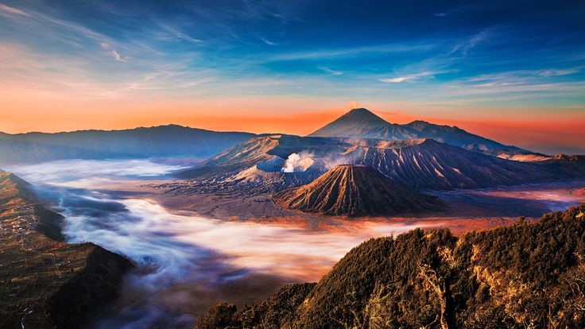

Salah satu wisata alam yang terkenal di Jawa Timur

Gunung Bromo merupakan salah satu tempat wisata yang terkenal di Jawa Timur. Gunung ini berada di kawasan Taman Nasional Bromo Tengger Semeru.
Bromo banyak dikunjungi wisatawan karena memiliki pemandangan alam yang indah. Suasana di sekitar gunung juga terasa sejuk, terutama pada pagi hari.
Jawa Timur, Indonesia
Sekitar 2.329 mdpl
Sunrise dan Lautan Pasir
Salah satu hal yang membuat Bromo menarik adalah pemandangan matahari terbitnya. Banyak wisatawan datang pagi-pagi untuk melihat sunrise dari tempat yang lebih tinggi.
Selain gunung, kawasan Bromo juga memiliki lautan pasir yang luas dan pemandangan pegunungan yang menarik.
Gunung Bromo merupakan salah satu wisata alam yang menarik untuk dikunjungi. Keindahan sunrise, lautan pasir, dan pemandangan pegunungan menjadi daya tarik utama Bromo. Oleh karena itu, Gunung Bromo menjadi salah satu tempat wisata yang terkenal di Indonesia.